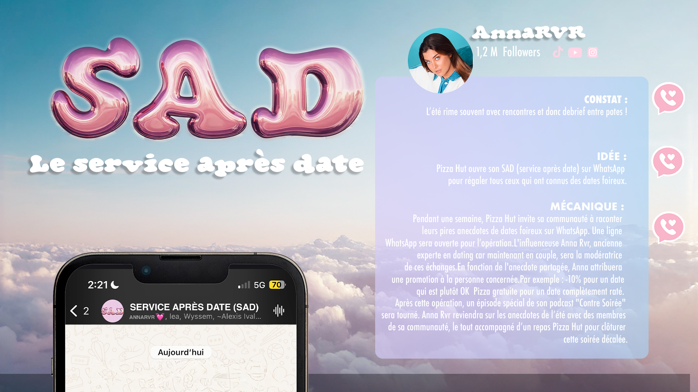
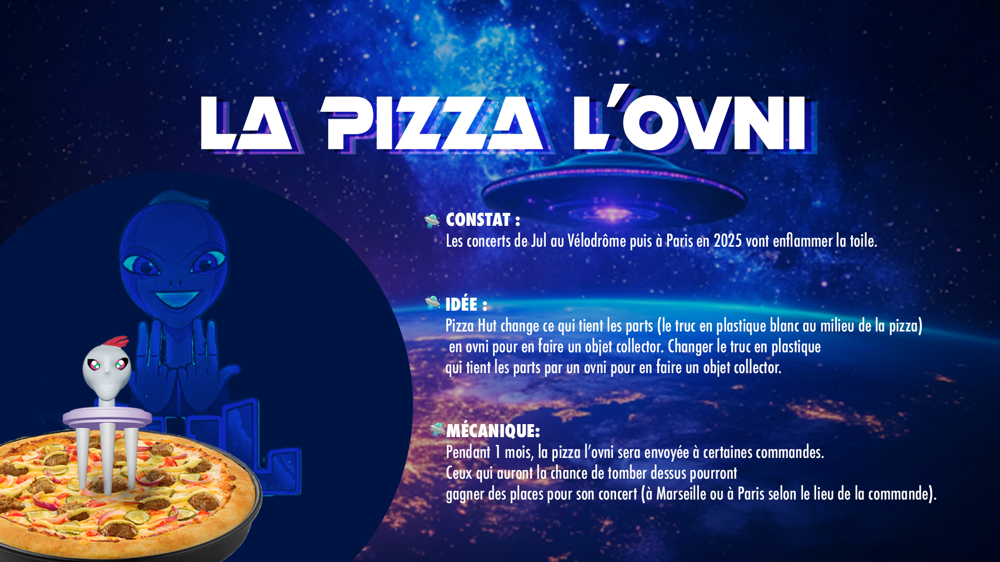
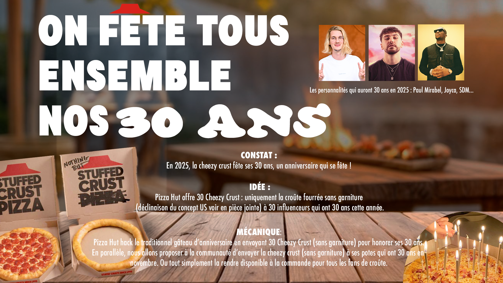
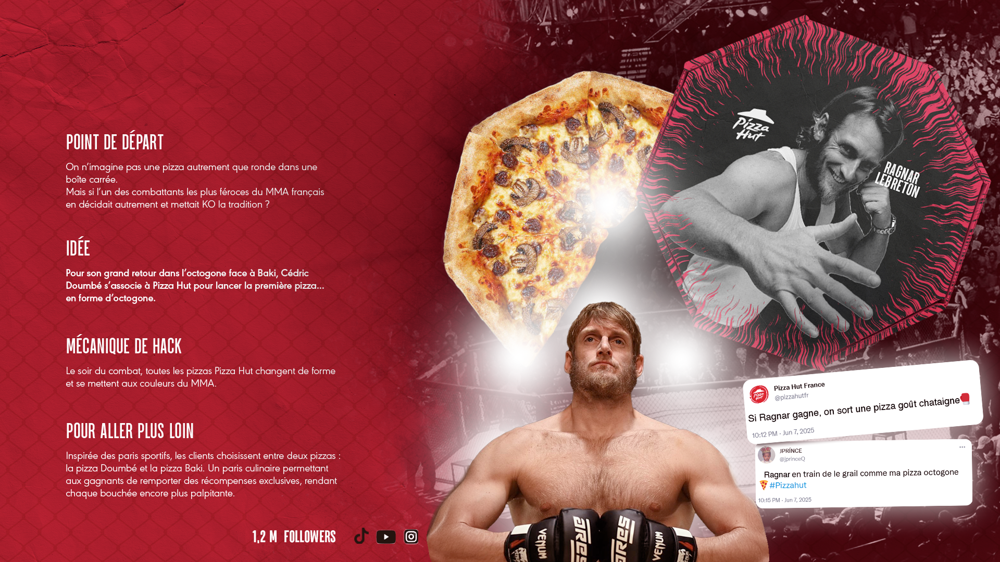

Feed the feed, not just the people.
Agency: New Business.
Role: Creative Concept, Art Direction & Prototyping.
Scope: Social Media Strategy, Pop-Culture Activations & Tone of Voice.
Year: 2024.
Pitching Pizza Hut to take over their social channels meant shifting from traditional fast-food advertising to pure cultural hijacking. Instead of generic social content, we built a reactive campaign designed to place the brand at the center of every major cultural gathering, from rap drops to fight nights.
We turned local pop culture phenomena into immediate sales drivers by hacking the moments everyone was already talking about. For the historic Doumbé vs Baki MMA fight, we physically re-engineered the box into an octagon. For Marseille rap icon JuL's stadium tour, the plastic pizza saver became a collectible alien artifact. Partnering with lifestyle creator Anna RVR, we transformed dating heartbreak into WhatsApp discount codes. To mark 30 years of Cheezy Crust, we sent bare crust cakes to creators reaching the same milestone. Four distinct cultural touchpoints, one reactive strategy: turning real-time hype into brand action.

THE DATE AFTERMARKET (SAD)
Bad dates always end with a debrief over comfort food. We proposed partnering with lifestyle creator Anna RVR to launch a dedicated WhatsApp hotline. Fans would send voice notes of their worst dating disasters, and Anna would convert their emotional trauma into Pizza Hut discount codes. The campaign would wrap up with a live debrief on her podcast Contre Soirée. Emotional damage paid off in free pizza.

THE UFO SAVER
To ride the wave of Marseille rap icon JuL’s sold-out stadium tour, we pitched hijacking a forgotten object: the plastic pizza saver. We redesigned it into a collectible mini UFO, the artist’s signature alien symbol. Placed inside random delivery boxes, these golden tickets unlocked exclusive concert seats. To prove the concept for the pitch, I personally custom-designed, 3D-printed, and hand-painted the actual physical prototype.

30 YEARS OF CRUST
The cheesy crust is the undisputed star of Pizza Hut, so for its 30th anniversary, we stripped away the pizza entirely. We pitched delivering topping-free, stuffed-crust “birthday cakes” to famous creators hitting their 30s the same year. By sending these minimalist crust rings to figures like Paul Mirabel, Joyca, and SDM, we turned a product quirk into a viral unboxing moment before making the crust-only order available to the public.

THE OCTAGON PIZZA
To hijack France’s biggest MMA fight night, we pitched reshaping the traditional pizza into an octagon. The activation turned fight predictions into a culinary bet, inviting fans to pick between a Doumbé or Baki pizza to unlock exclusive rewards. We pushed the fight-night banter onto social media with real-time trolling, threatening to launch a chestnut-flavored pizza if internet personality Ragnar Le Breton won his bout.